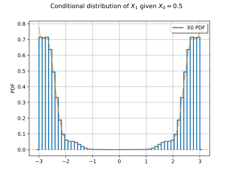

Note
Go to the end to download the full example code.
Customize your Metropolis-Hastings algorithm¶
This simple example shows how you can build your own variant of the Metropolis-Hastings algorithm.
We want to sample from the distribution with support ![[-3, 3]^2]() whose PDF
whose PDF ![f]() is proportional to the Ackley function to the tenth power:
is proportional to the Ackley function to the tenth power:
![\forall \vect{x} \in [-3, 3]^2 \quad f(\vect{x}) \propto a(\vect{x})^{10},]()
where ![a]() is the Ackey function defined in The Ackley test case page.
In the following we call it the “Ackley distribution”.
is the Ackey function defined in The Ackley test case page.
In the following we call it the “Ackley distribution”.
import openturns as ot
import openturns.viewer as otv
from openturns.usecases import ackley_function
from numpy import exp, format_float_scientific
ot.RandomGenerator.SetSeed(100)
Prepare the Metropolis-Hastings algorithm¶
Define the Ackley distribution support and density (up to a constant factor).
am = ackley_function.AckleyModel()
ackley = am.model
power10 = ot.SymbolicFunction("x", "x^10")
ackley_pdf = ot.ComposedFunction(power10, ackley)
logarithm = ot.SymbolicFunction("x", "10 * log(x)")
ackley_logpdf = ot.ComposedFunction(logarithm, ackley)
lb = -3.0
ub = 3.0
support = ot.Interval([lb] * 2, [ub] * 2)
Define the proposal distribution as a Histogram.
Its ticks (on the X axis of the PDF of the histogram) will remain the same,
but its frequencies (on the Y axis) will be updated
during the course of the Metropolis-Hastings algorithm.
n_bins = 50
myticks = ot.RegularGrid(lb, (ub - lb) / n_bins, n_bins + 1).getValues()
frequencies = [1.0] * (myticks.getSize() - 1)
proposal = ot.Histogram(myticks, frequencies)
The state of the Markov chain must be converted to an acceptable set
of parameters for the Histogram distribution.
This is the job of the link function,
which we construct with the OpenTURNSPythonFunction class.
It takes a state as input and outputs the parameters (ticks and frequencies)
of the proposal distribution.
In our case, the ticks will not depend on the inputs,
but the frequencies will be outputs of the Ackley function.
parameter_dim = proposal.getParameter().getSize()
parameter_desc = proposal.getParameterDescription()
class ConditionalAckley(ot.OpenTURNSPythonFunction):
"""
When executed, this function returns the parameters of a Histogram
which approximates the conditional Ackley distribution obtained
when one of the 2 coordinates is fixed.
To compute the frequencies of the Histogram,
this OpenTURNSPythonFunction computes the values of the Ackley function
on a regular grid on the line parallel to
either the (1, 0) vector (if the second coordinate is fixed)
or the (0, 1) vector (if the first coordinate is fixed)
containing the point passed as input.
The regular grid covers the part of this line which is contained in
the support of the Ackley distribution, implicitly defined as the
smallest square that contains the cartesian product of the regular grid
with itself. For example, if the regular grid covers the interval [-3, 3],
then the support is the square [-3, 3] x [-3, 3].
Parameters
----------
marginal : int
The marginal whose value is *not* fixed.
If 0, then the line of the regular grid is parallel to the (1, 0) vector.
If 1, then the line of the regular grid is parallel to the (0, 1) vector.
ticks : RegularGrid
Ticks of the Histogram distribution.
"""
def __init__(self, marginal, ticks):
super().__init__(2, parameter_dim)
self.setInputDescription(["X0", "X1"]) # input: X0 and X1 coordinates
self.setOutputDescription(parameter_desc) # output: parameters of the Histogram
self._marginal = marginal # parameter which does not vary after initialization
offset = (ticks[1] - ticks[0]) / 2
self._marginal_inputs = ot.Sample.BuildFromPoint(ticks)[0:-1] + offset
# _marginal_inputs contains the varying coordinate of the points in the regular grid
self._size = self._marginal_inputs.getSize()
self._ticks = ticks
def _exec(self, X):
"""
Execute the function on a point X = (X0, X1).
Parameters
----------
X : list of 2 floats
Point through which the line containing the regular grid passes.
Returns
-------
parameters : :class:`~openturns.Point`
Parameters of the :class:`~openturns.Histogram`.
"""
inputs = ot.Sample(self._size, X) # sample of inputs for the Ackley function
# All input points are initialized at the point X passed as argument.
# Replace the varying coordinate with the values of the regular grid.
inputs[:, self._marginal] = self._marginal_inputs
# Compute the Ackley function on these inputs.
outputs = exp(ackley_logpdf(inputs).asPoint())
# The outputs are the unnormalized frequencies of the Histogram
# proposal distribution, but the Histogram.setParameter() method
# expects a full set of parameters.
# The easiest way to provide it is to construct a new Histogram object
# with the adequate frequencies and call its getParameter() method.
return ot.Histogram(self._ticks, outputs).getParameter()
The 2 components of the state of the Markov chain will be updated
one after the other, not simultaneously.
We define 2 UserDefinedMetropolisHastings algorithms
encapsulated within a Gibbs algorithm,
so we need 2 link functions, each corresponding to one of the marginals
of the Ackley distribution.
Note that thanks to the OpenTURNSPythonFunction class,
we were able to only code one template to be used by two different functions
instead of directly coding two functions with the PythonFunction class.
link_function_0 = ot.Function(ConditionalAckley(0, myticks))
link_function_1 = ot.Function(ConditionalAckley(1, myticks))
Let us illustrate the first of these functions.
We can start by evaluating it at ![(0.5, 1.5)]() .
Let
.
Let ![(X_0, X_1)]() be a bidimensional random variable
following the Ackley distribution.
The output is the set of parameters for a
be a bidimensional random variable
following the Ackley distribution.
The output is the set of parameters for a Histogram
distribution that approximates the distribution of ![X_0]() conditional on
conditional on ![X_1 = 1.5]() .
Let us update the Histogram we created before with this set of parameters.
.
Let us update the Histogram we created before with this set of parameters.
par = link_function_0([0.5, 1.5])
proposal.setParameter(par)
print(par)
[-3,0.12,0.574885,0.12,0.590611,0.12,0.616354,0.12,0.575301,0.12,0.474915,0.12,0.345447,0.12,0.217746,0.12,0.127608,0.12,0.0892587,0.12,0.086088,0.12,0.093021,0.12,0.0909145,0.12,0.0769473,0.12,0.0565498,0.12,0.0353399,0.12,0.0193349,0.12,0.0118315,0.12,0.01083,0.12,0.0129736,0.12,0.0148585,0.12,0.0146287,0.12,0.0124841,0.12,0.0091527,0.12,0.00577608,0.12,0.00381056,0.12,0.00381056,0.12,0.00577608,0.12,0.0091527,0.12,0.0124841,0.12,0.0146287,0.12,0.0148585,0.12,0.0129736,0.12,0.01083,0.12,0.0118315,0.12,0.0193349,0.12,0.0353399,0.12,0.0565498,0.12,0.0769473,0.12,0.0909145,0.12,0.093021,0.12,0.086088,0.12,0.0892587,0.12,0.127608,0.12,0.217746,0.12,0.345447,0.12,0.474915,0.12,0.575301,0.12,0.616354,0.12,0.590611,0.12,0.574885]#101
The link_function_0 function computes histogram frequencies proportional
to the values of the unnormalized Ackley distribution PDF
along the line.
title = "Ackley PDF (up to a constant factor) and $X_1 = 1.5$ cross-section"
graph = ot.Graph(title, "$X_0$", "$X_1$", True)
line = ot.Curve([[-3, 1.5], [3, 1.5]], "black", "dashed", 2)
graph.add(line)
contour = ackley_pdf.draw([lb] * 2, [ub] * 2).getDrawable(0).getImplementation()
contour.setLabels(
[format_float_scientific(float(v), precision=1) for v in contour.getLabels()]
)
contour.setColorMapNorm("log")
graph.add(contour)
view = otv.View(graph)

Let us compare the histogram to the unnormalized PDF (we still need to rescale it to make it appear properly on the graph).
scaling = ot.SymbolicFunction("x", "1.3e-10 * x")
scaled_ackley_pdf = ot.ComposedFunction(scaling, ackley_pdf)
graph = proposal.drawPDF()
graph.setXTitle("")
graph.add(scaled_ackley_pdf.draw(0, 0, [0.0, 1.5], -3.0, 3.0, 100))
graph.setTitle("Conditional distribution of $X_0$ given $X_1 = 1.5$")
_ = otv.View(graph)
Let us now do the same think with link_function_1.
This time, the relevant cross-section is along the line ![X_1 = 0.5]() .
.
par = link_function_1([0.5, 1.5])
proposal.setParameter(par)
print(par)
title = "Ackley PDF (up to a constant factor) and $X_0 = 0.5$ cross-section"
graph = ot.Graph(title, "$X_0$", "$X_1$", True)
line = ot.Curve([[0.5, -3], [0.5, 3]], "black", "dashed", 2)
graph.add(line)
graph.setLegendPosition("upper right")
contour = ackley_pdf.draw([lb] * 2, [ub] * 2).getDrawable(0).getImplementation()
contour.setLabels(
[format_float_scientific(float(v), precision=1) for v in contour.getLabels()]
)
contour.setColorMapNorm("log")
graph.add(contour)
view = otv.View(graph)
scaling = ot.SymbolicFunction("x", "3.1e-10 * x")
scaled_ackley_pdf = ot.ComposedFunction(scaling, ackley_pdf)
graph = proposal.drawPDF()
graph.setXTitle("")
graph.add(scaled_ackley_pdf.draw(1, 0, [0.5, 0.0], -3.0, 3.0, 100))
graph.setTitle("Conditional distribution of $X_1$ given $X_0 = 0.5$")
_ = otv.View(graph)

- 
[-3,0.12,0.714193,0.12,0.709153,0.12,0.714195,0.12,0.635879,0.12,0.49337,0.12,0.331163,0.12,0.187923,0.12,0.0968651,0.12,0.0598784,0.12,0.0526439,0.12,0.0522747,0.12,0.0457978,0.12,0.0334477,0.12,0.0202285,0.12,0.00973413,0.12,0.00378105,0.12,0.00159728,0.12,0.0011016,0.12,0.001075,0.12,0.00097469,0.12,0.00070403,0.12,0.00040715,0.12,0.0001854,0.12,6.70262e-05,0.12,2.77594e-05,0.12,2.77594e-05,0.12,6.70262e-05,0.12,0.0001854,0.12,0.00040715,0.12,0.00070403,0.12,0.00097469,0.12,0.001075,0.12,0.0011016,0.12,0.00159728,0.12,0.00378105,0.12,0.00973413,0.12,0.0202285,0.12,0.0334477,0.12,0.0457978,0.12,0.0522747,0.12,0.0526439,0.12,0.0598784,0.12,0.0968651,0.12,0.187923,0.12,0.331163,0.12,0.49337,0.12,0.635879,0.12,0.714195,0.12,0.709153,0.12,0.714193]#101
We now choose the initial state of the Markov chain.
initialState = [0.1] * 2
Sample from the Ackley distribution¶
We can finally define the two Metropolis-Hastings algorithms and the Gibbs algorithm which encapsulates them.
gmh_0 = ot.UserDefinedMetropolisHastings(
ackley_logpdf, support, initialState, proposal, link_function_0, [0]
)
gmh_1 = ot.UserDefinedMetropolisHastings(
ackley_logpdf, support, initialState, proposal, link_function_1, [1]
)
gibbs = ot.Gibbs([gmh_0, gmh_1])
sample = gibbs.getSample(100)
Print the acceptance rates of the two Metropolis-Hastings samplers
mhlist = gibbs.getMetropolisHastingsCollection()
rate_gmh_0 = mhlist[0].getAcceptanceRate()
rate_gmh_1 = mhlist[1].getAcceptanceRate()
print("Acceptance rates: {} and {}".format(rate_gmh_0, rate_gmh_1))
Acceptance rates: 0.99 and 0.91
Draw the contour plot of the Ackley distribution PDF (up to a multiplicative constant) and the MCMC sample: we can see the sample is accurate.
title = "Ackley PDF (up to a constant factor) and Metropolis-Hastings sample"
graph = ot.Graph(title, "$X_0$", "$X_1$", True)
contour = ackley_pdf.draw([lb] * 2, [ub] * 2).getDrawable(0).getImplementation()
contour.setLabels(
[format_float_scientific(float(v), precision=1) for v in contour.getLabels()]
)
print(contour.getLabels())
contour.setColorMapNorm("log")
graph.add(contour)
graph.add(ot.Cloud(sample, "black", "plus"))
view = otv.View(graph)
[3.4e+05,6.6e+06,4.9e+07,1.2e+08,3.1e+08,6.7e+08,1.2e+09,1.9e+09,3.4e+09,7.8e+09]#10
Display all figures
otv.View.ShowAll()